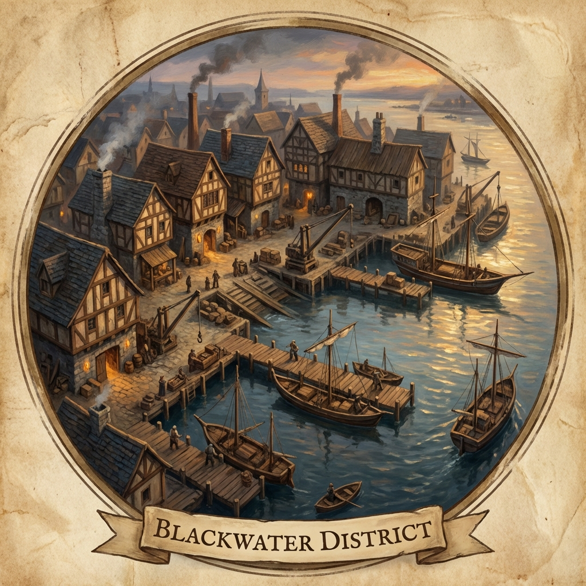

⚓ Industrial Waterfront
The salt-crusted, working-class heart of Varkenbluff's maritime trade
Overview
The Industrial Waterfront is a sprawling district of docks, warehouses, boat repair yards, and fisheries. Far from the city watch's usual patrol routes, this area serves as home to sailors, dockworkers, and those who prefer their business conducted without official oversight.
Kraeger's Boatyard—and beneath it, the Drydock Cellar—sits at the quieter, semi-abandoned edge of this district.
Location
Physical Details
Character
- Rope-strewn piers and creaking wooden docks
- Warehouses with salt-stained walls
- Tar-pits and dry docks for ship repair
- Narrow alleys between storage buildings
Key Locations
Ambiance
| Sense | Description |
|---|---|
| Sight | Masts and rigging; stacked crates; workers hauling cargo |
| Sound | Creaking timber; harbor bells; gulls; distant songs |
| Smell | Salt, fish, tar, coal smoke |
⚔️ Session History
- ✓ Team established base at Drydock Cellar